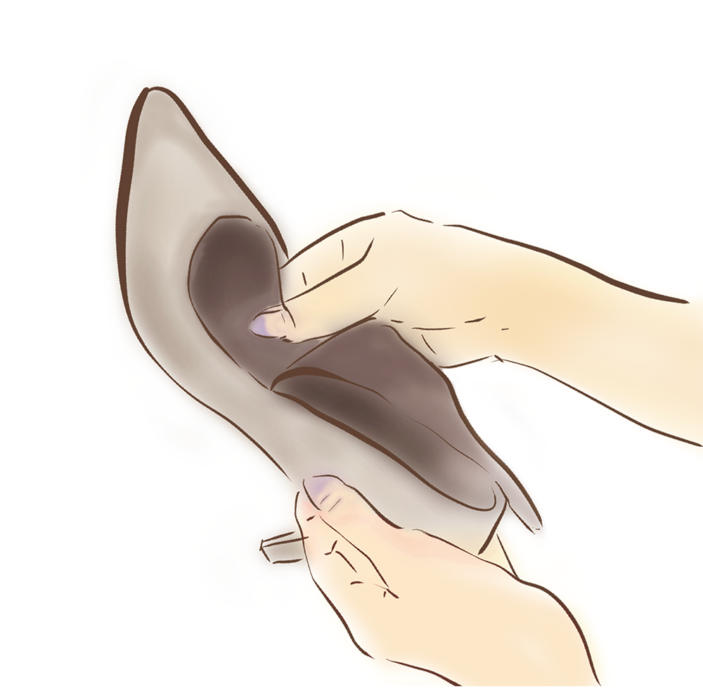

お気に入りの靴を長く快適に履き続けるために
一目で気に入って買った靴が、履いてみると少し窮屈だったり、
長く使っているうちにかかとが抜けやすくなることはありませんか？
一目で気に入って買った靴が、履いてみると少し窮屈だったり、 長く使っているうちにかかとが抜けやすくなることはありませんか？
そんな時は、ぜひ銀座かねまつにお持ちください。
当店のシューフィッターが購入後もフィッティングや調整を行い、
お客様の大切な靴を快適に履き続けられるようサポートいたします。
そんな時は、ぜひ銀座かねまつにお持ちください。
当店のシューフィッターが購入後もフィッティングや調整を行い、
お客様の大切な靴を快適に履き続けられるようサポートいたします。
全店舗で無料の調節サービスを実施中
銀座かねまつでは、全店舗にシューフィッターが在籍しており、
靴の調整を無料で承ります。足に合わなくなった靴もシューフィッターが
その場で丁寧にフィッティングし、最適な履き心地を提供します。
銀座かねまつでは、全店舗にシューフィッターが在籍しており、 靴の調整を無料で承ります。足に合わなくなった靴もシューフィッターがその場で丁寧にフィッティングし、最適な履き心地を提供します。
ヒールやインソールの調整により、履きやすく長く使える靴に生まれ変わります。
お客様の足元の健康を、プロフェッショナルなケアでサポートします。
ヒールやインソールの調整により、履きやすく長く使える靴に生まれ変わります。 お客様の足元の健康を、プロフェッショナルなケアでサポートします。
調節サービス内容
少しきつい・部分的に当たる
幅を伸ばす
「幅に少しゆとりがほしい」という時も調節が可能です。
甲が高めの方にもこちらの調節が有効です。
部分的に伸ばす
「全体的な履き心地は良いけど、部分的に当たる」という時も調節が可能です。足の骨が少し出ていたり、巻き爪の方など、部分的な調節が必要な方に有効です。

革をほぐす
「履き口が食い込む」「くるぶしに当たって気になる」という時も調節が可能です。革を叩くことで繊維をほぐして厚みを薄くします。

筒を伸ばす
「足周りは合っているけど筒がきつい」「ブーツインをすることも考えるともう少し筒周りに余裕がほしい」という時も調節が可能です。足がむくみやすい方は、むくんでいる時間帯にご来店いただくことをお勧めします。
幅を伸ばす

「幅に少しゆとりがほしい」という時も調節が可能です。
甲が高めの方にもこちらの調節が有効です。
部分的に伸ばす
「全体的な履き心地は良いけど、部分的に当たる」という時も調節が可能です。足の骨が少し出ていたり、巻き爪の方など、部分的な調節が必要な方に有効です。
革をほぐす
「幅に少しゆとりがほしい」という時も調節が可能です。甲が高めの方にもこちらの調節が有効です。
筒を伸ばす

「足周りは合っているけど筒がきつい」「ブーツインをすることも考えるともう少し筒周りに余裕がほしい」という時も調節が可能です。足がむくみやすい方は、むくんでいる時間帯にご来店いただくことをお勧めします。
少しゆるい・フィット感がほしい
空間を埋める
「幅が少しゆるい」「足が前に滑ってかかとが抜けそう」という時も調節が可能です。足に合わせてカットしたり、組み合わせることも可能です。
※市販の滑り止めなどとは異なり、中敷きをめくって入れるため、脱いだ時の見た目も気になりません。

上記以外にも、足と靴の状態に合わせた調節方法があります。
お気軽にご来店ください。
上記以外にも、足と靴の状態に合わせた調節方法があります。 お気軽にご来店ください。
※履き心地には個人差がございます。必ずご満足いただける履き心地にできるというお約束はできかねることをあらかじめ ご了承ください。
※当社製品以外のご調節は承りかねますので、あらかじめご了承ください。